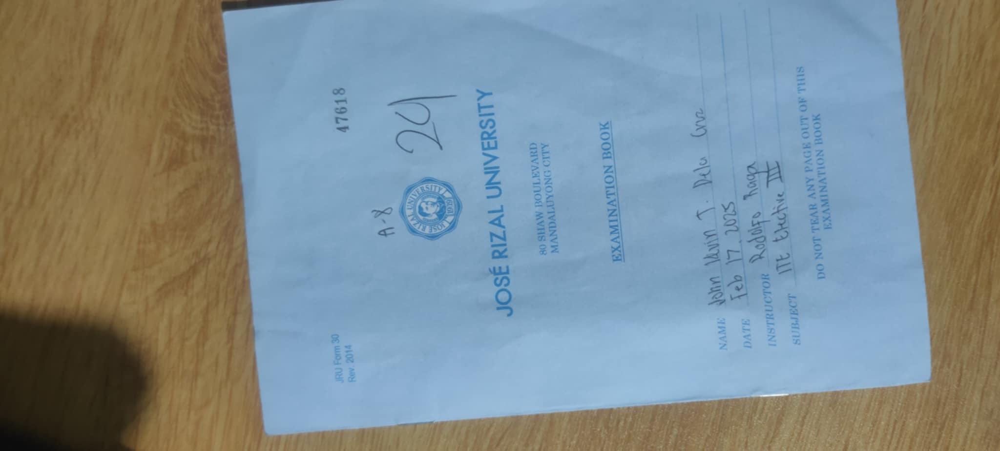

Actvitiy 1 - Comparing Logistic Regression with Decision Tree for Multinomial Classification
Actvitiy 2 - Research Proposal Writing and Presentation
In these two activities, I learned the fundamental concepts and practical applications of both K-Nearest Neighbors (KNN) and Multiple Linear Regression. I gained hands-on experience in building and training these models, selecting the right features, and interpreting their outputs. Moreover, I learned how to validate their performance using evaluation metrics and conducted experimentation to optimize the models for better accuracy and predictive power.
Prelim Quiz
I gave my best in this quiz, and I’m proud of the effort I put in. I’ve come to realize that I still need to work on clearly articulating my thoughts and explaining my answers more effectively. For a first attempt, it’s not bad at all — this experience has shown me where I can improve and how I can do better moving forward.
Prelim Examination
I know I gave my best in this examination, and I’m proud of the effort I put in. However, I also realized that I need to improve in clearly explaining my ideas and insights. It’s not a bad start for my first try — it’s a valuable learning experience that shows me where to grow next.
To summarize my first term in ITE 3 under the guidance of Dr. Raga, I can say it has been a meaningful and motivating experience. I’ve come to understand and adapt to his unique teaching style, which encourages independent exploration and critical thinking. This approach has helped me learn more efficiently and stay motivated throughout the course. The exercises were insightful and helped deepen my understanding of algorithms like K-Nearest Neighbors (KNN) and Multiple Linear Regression—topics I never expected to explore this early. I particularly appreciate how the quizzes and exams are designed to simulate real-world scenarios, making us feel as though we are preparing to apply for actual data analyst roles. Personally, I’m determined to gain a competitive edge and continuously improve. I will make the most of the resources available to me at Jose Rizal University to develop the skills and confidence I need to become a well-prepared data analyst in the field.